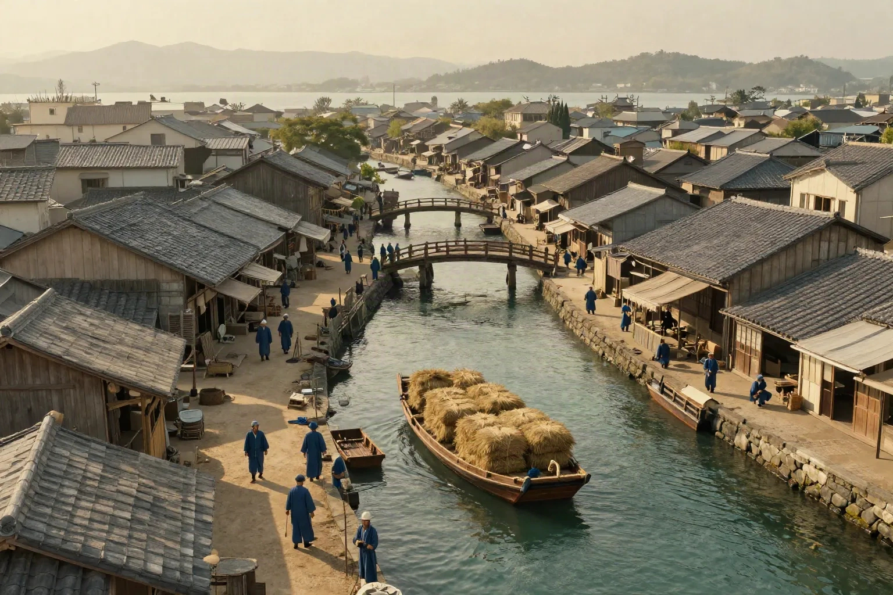
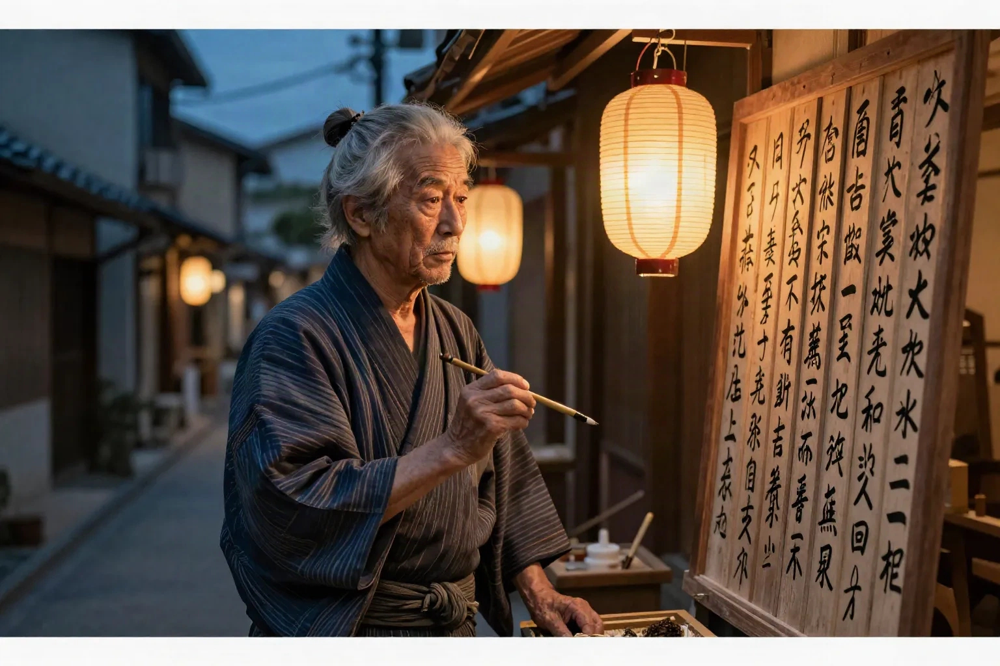
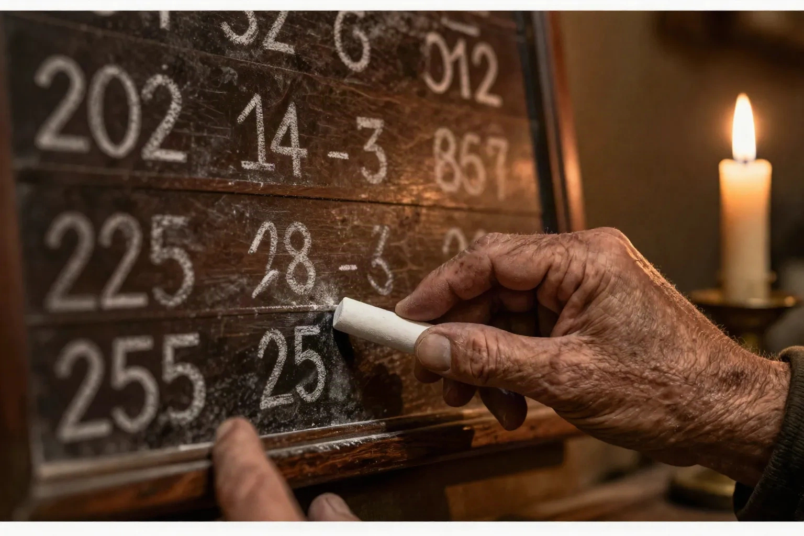
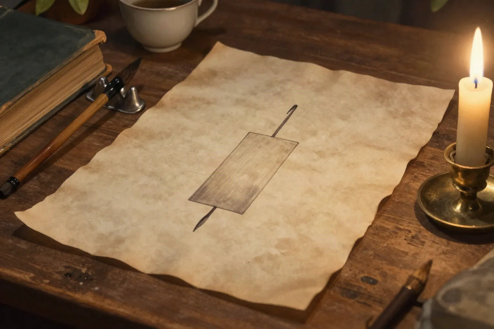

Shot 1 — The port
Beat 0:00–0:15 · aerial canal district at golden hour


Plate (painted original) on the left, Stage-1 photoreal still on the right. One take each: Z-Image Turbo, creativity 0.85, landscape 1536×1024, medium quality — identical settings across all shots, per the prompt pack's style lock.
Beat 0:00–0:15 · aerial canal district at golden hour

Beat 0:15–0:31 · dusk, price board, lantern


Beat 0:31–0:47 · hands, board, candle


Beat 0:47–1:03 · parchment, inked candle mark, brass candle


Beat 1:03–1:19 · parchment chart continuing onto the monitor